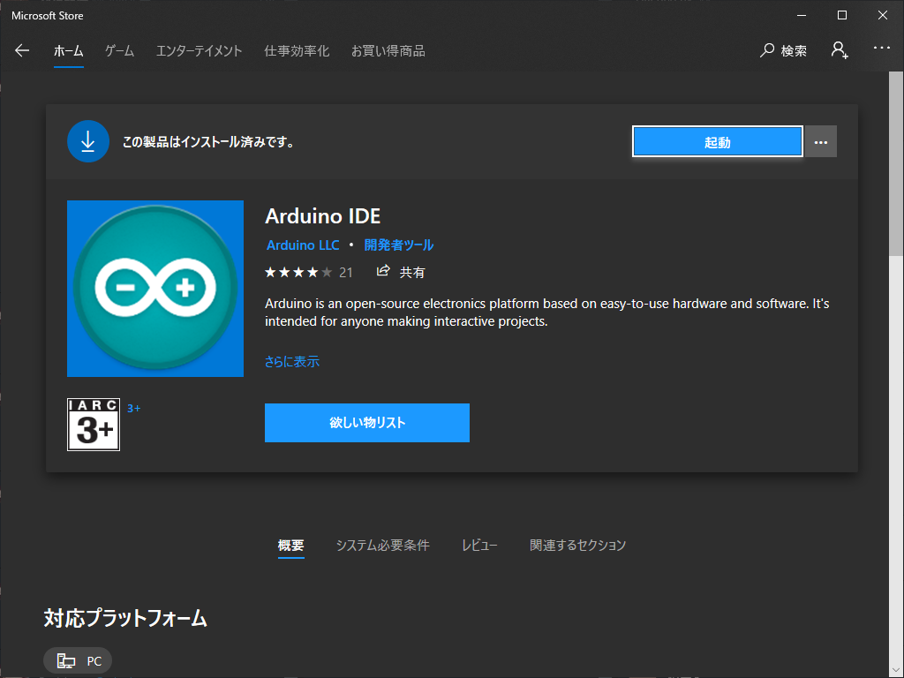

自動運転を行うモジュールとして、Raspberry Pi 4 Model B を使用する。この項では、そのセットアップの手順を示す。
Raspberry Pi 4 Model B を動作させるため、Raspberry Pi OS
が必要になる。汎用性のために、web ページから OS イメージを直接入手することを強く推奨する。GNU/Linux では
dd のようなプログラムで OS イメージを書き込むことが出来るが、Windows 環境では、Rufus
のようなイメージを書き込むソフトウェアも用意する必要がある。

Windows では、Rufus のようなソフトウェアを使用して書き込む。Rufus を起動し、SD カードを選択後、ウィンドウ内にイメージファイルをドラック & ドロップし、"スタート"をクリックする。 Rufus 以外のソフトウェアを使用する場合は、各ソフトウェアのドキュメントを参照すること。

画面上の指示に従い、OS をセットアップする。セットアップ後、端末エミュレータを開き、以下のコマンドを入力して、実行環境の準備を行う。
sudo apt update
sudo apt upgrade
sudo apt install python3 python3-opencv
バキバキのちんこ
模型車両の制御には、Arduino UNO を利用する。この項では、セットアップ手順を示す。
模型車両を操作するプログラムを Arduino UNO に書き込むために、Arduino IDE が必要になる。Arduino IDE は、Arduino の web ページから入手が可能である。Windows 10 であれば、Microsoft Store からも入手が可能である。
ちんちんもみもみ